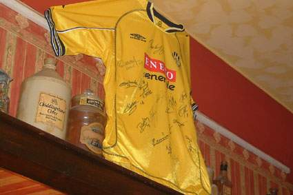
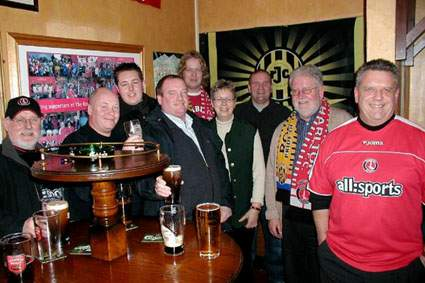
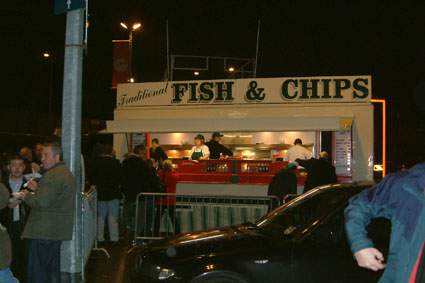
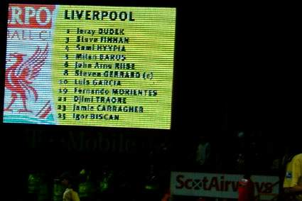
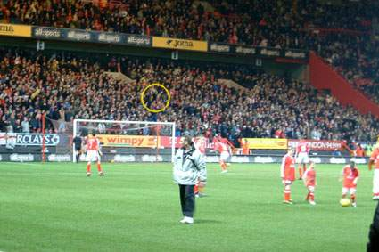
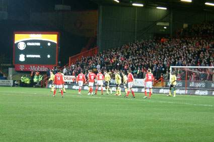
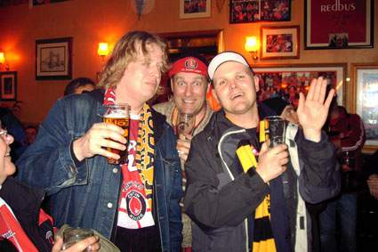

|
Charlton Athletic - Liverpool (1-2) 1 februari 2005 |
Charlton Athletic - Liverpool (1-2) 1 februari 2005

Onlangs reisde er weer eens een Roda-delegatie
richting Londen voor een
match van onze vrienden van Charlton Athletic. Bij aankomst in stamkroeg
Rose Of Denmark prijkte het vorig jaar door Roda JC geschonken
gesigneerde wedstrijdshirt aan de muur van deze Rodapub.

Charlton speelde op deze dinsdagavond tegen het grote en
populaire
Liverpool FC dat ook in Londen weer duizenden fans op de been bracht.
Uiteraard wilden sommigen in de Rose aanwezige 'scoucers' perse op de
foto met enkele RJC-ers.

Traditional stadium food. Daar kan geen Martinair tegenop.

Liverpool trad aan met enkele gelouterde namen binnen de basis en
op de
bank.

Deze keer zaten de geel-zwarten op de immense North-stand alwaar
de
sfeer indrukwekkend was.

De Reds uit Liverpool namen de gehele Jimmy Seed stand in beslag
alwaar zij al redelijk snel de 1-0 voor hun kiezen kregen.

Omdat de 1-2 einduitslag volkomen terecht was, werd er ook op
deze
dinsdagavond gedronken op een prachtige voetbalavond en op een weerzien
in mei wanneer er weer een CAFC delegatie richting Kerkrade zal afreizen.
Met dank aan Koempel Gebronx, Tracy Lamb en David Hatch.
© Koempels Pleasure Dome